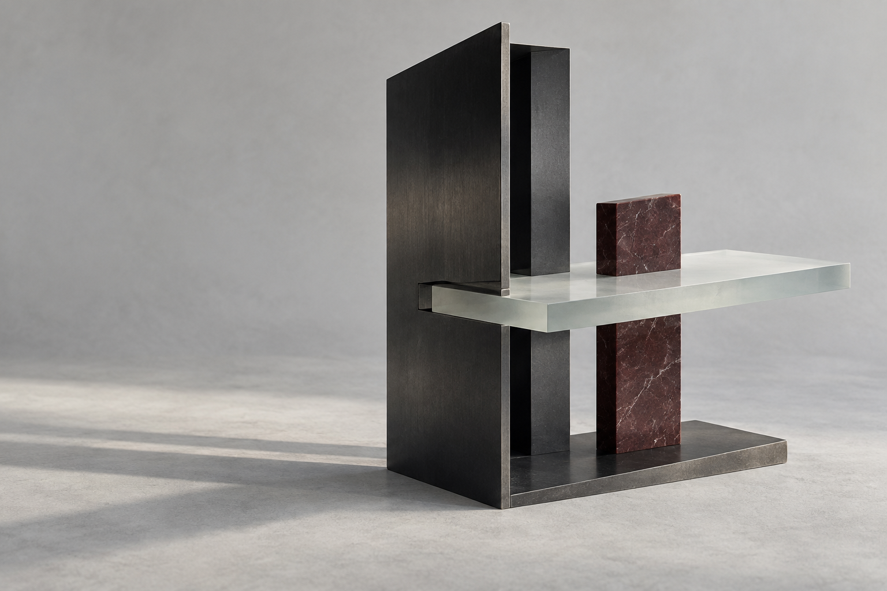

What happens next.
will@willgodfrey.comIf it sounds like a venture, I will suggest a thirty-minute call. If it does not, I will say so, and point you somewhere better if I can.
You can also copy the address into your email app.
A place to start
The decision in front of you.
You do not need a finished brief. The useful starting point is the question you are trying to answer.
- What are you considering?
- What is already in place?
- What decision do you need to make next?
Iowa City, Iowa
Largely remote, with scheduled blocks on site.